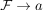
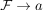
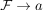

Konvergenz eines Filters zu einer konvergenten Folge
1. Satz
Sei  ein topologischer Raum und
ein topologischer Raum und  eine konvergente Folge.
Dann gilt für den Mengenfilter einer Folge  (siehe: Konvergenz eines Filters)
eine konvergente Folge.
Dann gilt für den Mengenfilter einer Folge  (siehe: Konvergenz eines Filters)
Sei ein topologischer Raum und eine konvergente Folge.
Dann gilt für den Mengenfilter einer Folge  (siehe: Konvergenz eines Filters)
 eine
eine  , so gilt nach annahme, dass
, so gilt nach annahme, dass